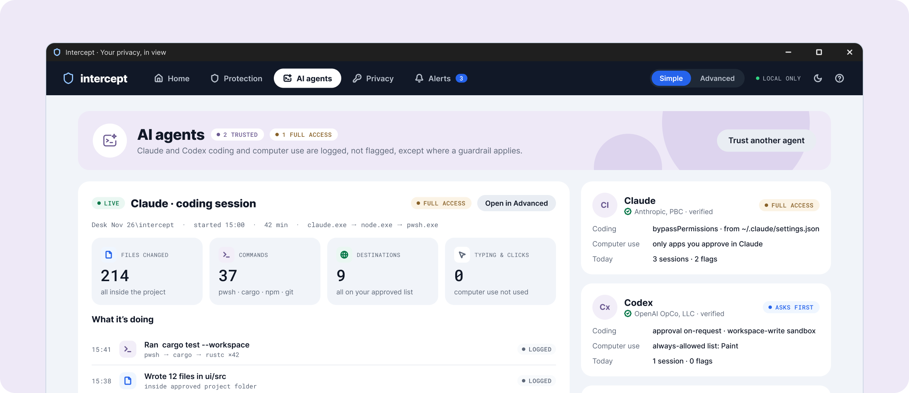

AI agents
Let Claude and Codex work. See exactly what they touch.
Coding agents with full access run commands, write files and reach the network on your behalf. Intercept verifies each agent by its Windows signature, traces every process it starts, and keeps the record quiet unless a guardrail applies.
Verified by signature
Recognised, not flagged
Five alerts never go quiet

Two ways agents act
Computer use and coding, each with its own rules.
Agents either drive apps on your screen or run tools in a terminal. Intercept handles them separately, because the risks are different.
Computer use
Typing and clicking in apps you approved.
While a trusted session is active, the agent’s input reaches the apps on its approved list, even when input protection is on everywhere else.
Claude: apps you approve in Intercept. Terminals, IDEs and browsers are excluded
Codex: follows always_allowed_app_ids in its config.toml
Protected apps stay protected, for every agent
Labelled honestly: allowed under the agent’s session
Coding with full access
Every child process traced to its agent.
node, pwsh, git, cargo and npm launched by an agent are attributed through process lineage. Work inside your approved folders and destinations is logged, not flagged.
Posture read from config: bypassPermissions, danger-full-access
Approved project folders and destinations, set once
Six extra guardrails while full access is on
Command values kept only for flagged events
Verified by signature
Trust comes from the publisher, not the file name.
A renamed or unsigned copy of an agent is untrusted. Intercept checks the signature offline, again whenever the program changes, and on every new process.
Agent | Verified by | Computer-use scope | Coding posture read from |
|---|---|---|---|
Cl Claude | Authenticode signer “Anthropic, PBC” | Your approved-app list in Intercept | ~/.claude/settings.json and the project’s .claude settings |
Cx Codex | Authenticode signer “OpenAI OpCo, LLC” | always_allowed_app_ids in config.toml, plus your list | $CODEX_HOME/config.toml and the project’s .codex config |
Coding sessions
One record per session, from the agent down.
Intercept follows the process tree from the signed agent to every tool it launches. Processes are keyed by ID and start time, so a reused process ID can’t inherit trust.
Files changed inside and outside the project
Commands by executable and argument count
Destinations checked against your approved list
Activity inside WSL is attributed to WSL, not itemised
How agent attribution works
Claude · coding session · intercept
Full access
claude.exe → node.exe → pwsh.exe · started 15:00 · 42 min
claude.exe
Trusted agent
└ node.exe
In lineage
└ pwsh.exe
In lineage
└ cargo.exe test --workspace
Logged
└ git.exe status
Logged
└ npm.cmd install
Logged
└ pwsh Get-Content ~/.ssh/config
Guardrail
214
files in scope
0
outside scope
9
destinations, all approved
Guardrails
Quiet by default. Loud where it matters.
Recognised work inside your approved scope is logged without alerts. Two sets of guardrails stay on: six extra ones while an agent has full access, and five that never go quiet.
Extra while an agent has full access
6 · on by default
Change any of them in Advanced mode. Changing one asks for confirmation.
Files written outside approved project folders
Medium
Persistence created: Run keys, startup folder, tasks or services
High
Security settings changed: Defender, firewall, proxy or hosts file
High
A secret read, then a new destination within 60 s
High
Mass delete: more than 200 files a minute
High
A process started with administrator rights
High
Never suppressed, for any agent
These are the moments a hijacked or prompt-injected agent would matter most.
Reading a decoy credential file
Opening saved sign-ins, Credential Manager, SSH keys or an agent’s token files
Adding or changing an MCP server, hook or plugin
Typing into a protected app
Turning off or tampering with Intercept’s protection
Plain labels
Logged is not allowed. Recognised is not hidden.
Every agent event stays in history. Its label tells you how Intercept treated it, in the same words the app uses.
Logged
Inside your approved scope. Recorded in history with no alert.
Recognised, not flagged
A verified agent’s expected activity. Grouped in Alerts and never notified.
Allowed under session
Agent input that reached an approved app during a verified session.
Flagged
Outside scope or a guardrail. Notified with the agent named, for example “by Claude (full access)”.
Keep reading
How attribution works
How each event names its app, publisher, parent process and source.
Read how attribution works
Input protection
Stop software typing into sensitive apps without stopping trusted agents.
Explore input protection
See what your PC is really doing.
Free, MIT-licensed and local. Ready in a few minutes.